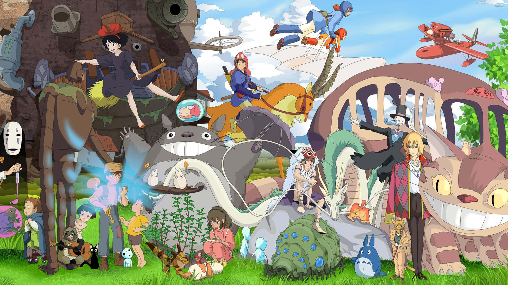

Welcome to My Website!
Hello and welcome to Ayla's Anime Picks! This website will introduce you to who I am and the top anime shows/movies I have seen. My goal is to share my genuine reviews and recommendations with others to share my love of anime. Whether you have seen various anime or you are a newcomer looking for your first watch, I hope my recommendations can help you find something you’ll love as much as I did.
About Me
My name is Ayla Urquizo, and I am currently a Junior at Northeastern University, where I am studying Computer Science and Business Administration. I started to watch anime back in January 2020. Like everyone else, I was stuck at home due to COVID-19 and became bored with my usual interests and hobbies. So, I decided to watch my first anime, ‘Hunter X Hunter’. I was immediately obsessed. The storytelling, animation, characters, and music are all perfectly combined into one show. It wasn’t long before I was exploring all sorts of anime. Now, I want to share this interest with others because it’s AWESOME! I hope you enjoy.